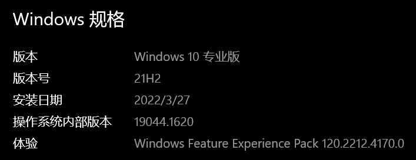
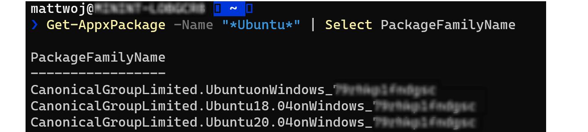
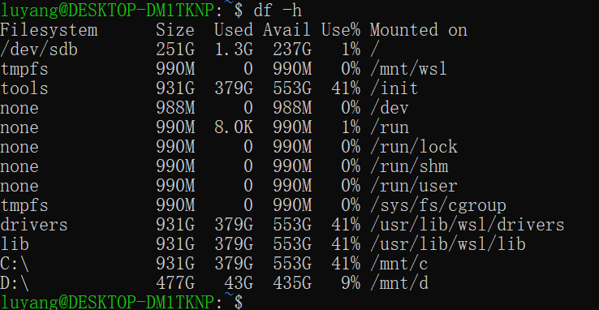
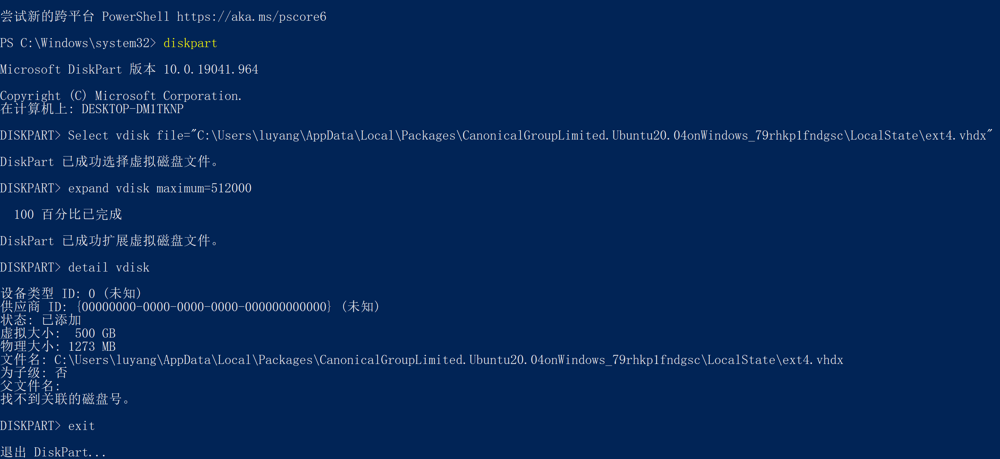
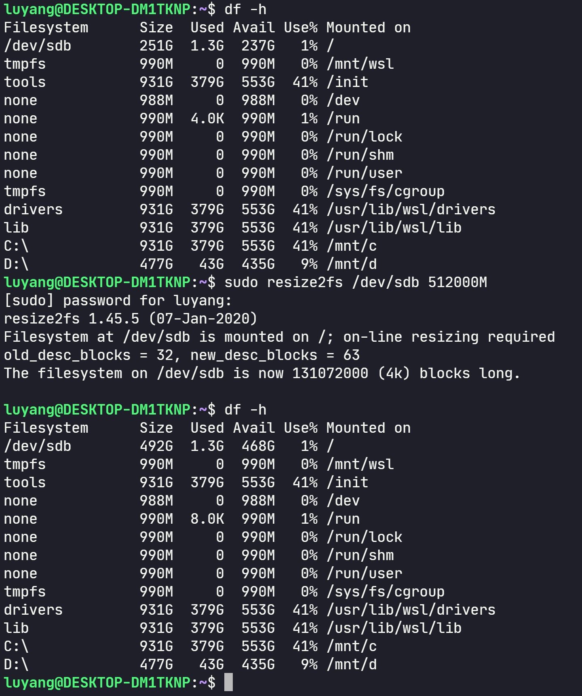

windows10 WSL setup
win10 安装 wsl2
必须运行 Windows 10 版本 2004 及更高版本（内部版本 19041 及更高版本）或 Windows 11。
→ 我的电脑win10已经更新到最新，应该没问题。
设置→系统→关于

以管理员身份运行 powershell
wsl —install
如果没有安装wsl，则会进入安装过程，如果已经安装会打印帮助信息
要在安装新的 Linux 发行版时将默认版本设置为 WSL 1 或 WSL 2，请使用命令 wsl --set-default-version <Version#>，将 <Version#>替换为 1 或 2。
wsl --set-default-version 2
wsl2 安装ubuntu distro
wsl --list --online
以下是可安装的有效分发的列表。 请使用“wsl –install -d <分发>”安装。
NAME FRIENDLY NAME
Ubuntu Ubuntu
Debian Debian GNU/Linux
kali-linux Kali Linux Rolling
openSUSE-42 openSUSE Leap 42
SLES-12 SUSE Linux Enterprise Server v12
Ubuntu-16.04 Ubuntu 16.04 LTS
Ubuntu-18.04 Ubuntu 18.04 LTS
Ubuntu-20.04 Ubuntu 20.04 LTS
wsl --install -d Ubuntu-20.04
卸载 wsl2 distro
wsl -l -v
wsl --unregister Debian
限制vmmem进程内存占用过高
%UserProfile% 目录下新建 .wslconfig , 内容如下
[wsl2]
memory=2GB
Access WSL2/Ubuntu Drive from File Explorer
- Open File Explorer
- Type
\\wsl$in the address bar - My distro shows up and click on it and you can see the file system.
Mount a Linux filesystem disk in WSL2
-
win usbipd .exe
-
下载wsl2内核源码，开启USB Mass Storage 编译安装
-
wsl2
- https://github.com/dorssel/usbipd-win/wiki/WSL-support#usbip-client-tools
- https://docs.microsoft.com/zh-tw/windows/wsl/connect-usb
sudo apt install linux-tools-virtual hwdata sudo update-alternatives --install /usr/local/bin/usbip usbip /usr/lib/linux-tools/*/usbip 20 -
OK
让 WSL 2 支持 USB WSL 2 connect a USB device
- Connect USB devices
- USB/IP open-source project uspipd-win is needed
- Once the USB/IP project has completed installing, you will need to install the user space tools and a database of USB hardware identifiers. These instructions are for Ubuntu — other distributions may require a different usbip client package.
sudo apt install linux-tools-5.4.0-77-generic hwdata
sudo update-alternatives --install /usr/local/bin/usbip usbip /usr/lib/linux-tools/5.4.0-77-generic/usbip 20
Running Linux kernel 5.10.60.1 or higher
luyang@DESKTOP-DM1TKNP:~/WSL2-Linux-Kernel-linux-msft-wsl-5.10.102.1$ uname -a
Linux DESKTOP-DM1TKNP 5.10.16.3-microsoft-standard-WSL2 #1 SMP Fri Apr 2 22:23:49 UTC 2021 x86_64 x86_64 x86_64 GNU/Linux
It has recently become simpler to update the WSL 2 Kernel: turn on “Receive updates for other Microsoft products when you update Windows” in the Advanced options for Windows update. The WSL2 kernel will get updated automatically.
以管理员身份运行 powershell
PS C:\Windows\system32> wsl --update
正在检查更新...
正在下载更新...
正在安装更新...
此更改将在 WSL 下次完全重启时生效。若要强制重启，请运行“wsl --shutdown”。
内核版本： 5.10.102.1
luyang@DESKTOP-DM1TKNP:/mnt/c/Users/luyang$ uname -a
Linux DESKTOP-DM1TKNP 5.10.102.1-microsoft-standard-WSL2 #1 SMP Wed Mar 2 00:30:59 UTC 2022 x86_64 x86_64 x86_64 GNU/Linux
identify the disk and partition to attach to WSL2
-
Before attaching your USB device, ensure that a WSL command line is open. This will keep the WSL 2 lightweight VM active.
-
List all of the USB devices connected to Windows by opening PowerShell in administrator mode and entering the command:
usbipd wsl listPS C:\Windows\system32> usbipd wsl list BUSID DEVICE STATE 1-2 HP HD Camera Not attached 1-7 Synaptics FS7604 Touch Fingerprint Sensor with PurePrint(TM) Not attached 1-10 英特尔(R) 无线 Bluetooth(R) Not attached 1-13 USB Attached SCSI (UAS) 大容量存储设备 Not attached 1-14 USB Attached SCSI (UAS) 大容量存储设备 Not attached
Select the bus ID of the device you’d like to attach to WSL and run this command. You’ll be prompted by WSL for a password to run a sudo command. The Linux distribution to be attached must be your default distribution. (See the Basic comands for WSL doc to change your default distribution). usbipd wsl attach --busid <busid>
PS C:\Windows\system32> usbipd wsl attach --busid 1-13
PS C:\Windows\system32>
Open Ubuntu (or your preferred WSL command line) and list the attached USB devices using the command: lsusb
luyang@DESKTOP-DM1TKNP:/mnt/c/Users/luyang$ lsusb
Bus 002 Device 002: ID 1058:25f3 Western Digital Technologies, Inc.
Bus 002 Device 001: ID 1d6b:0003 Linux Foundation 3.0 root hub
Bus 001 Device 001: ID 1d6b:0002 Linux Foundation 2.0 root hub
You should see the device you just attached and be able to interact with it using normal Linux tools. Depending on your application, you may need to configure udev rules to allow non-root users to access the device.
Once you are done using the device in WSL, you can either physically disconnect the USB device or run this command from PowerShell in administrator mode: usbipd wsl detach --busid <busid>
mount
- 按照上边的流程，usb设备已经挂载到了wsl2 ubuntu子系统，剩下的就是常规的ubuntu操作了
- sudo lsusb 可以显示usb设备，但是sudo fdisk -l不显示usb设备， lsblk 也不显示移动硬盘的分区
- [https://www.youtube.com/watch?v=iyBfQXmyH4o](https://www.youtube.com/watch?v=iyBfQXmyH4o
- https://github.com/microsoft/WSL/issues/7770
- https://github.com/microsoft/WSL2-Linux-Kernel/blob/918dbaa9fa4aa665c9e5fe44489dd453da7cadeb/Microsoft/config-wsl#L2374-L2380
- 手动编译内核
- 下载源码
sudo apt install build-essential flex bison libssl-dev libelf-dev libncurses-dev autoconf libudev-dev libtool
cd WSL2-Linux-Kernel-linux-msft-wsl-5.10.102.1
luyang@DESKTOP-DM1TKNP:~/WSL2-Linux-Kernel-linux-msft-wsl-5.10.102.1$ cp /proc/config.gz config.gz
luyang@DESKTOP-DM1TKNP:~/WSL2-Linux-Kernel-linux-msft-wsl-5.10.102.1$ gunzip config.gz
luyang@DESKTOP-DM1TKNP:~/WSL2-Linux-Kernel-linux-msft-wsl-5.10.102.1$ cp config .config
luyang@DESKTOP-DM1TKNP:~/WSL2-Linux-Kernel-linux-msft-wsl-5.10.102.1$ make menuconfig
# Device Drivers -> USB support -> select USB Mass Storage support and Enter y -> save and exit
luyang@DESKTOP-DM1TKNP:~/WSL2-Linux-Kernel-linux-msft-wsl-5.10.102.1$ make -j8
# 编译过程中报错, 根据报错直接vim .config 注释掉了 CONFIG_DEBUG_INFO_BTF 项，保存然后再次make -j8
# CONFIG_DEBUG_INFO_BTF is not set
luyang@DESKTOP-DM1TKNP:~/WSL2-Linux-Kernel-linux-msft-wsl-5.10.102.1$ sudo make modules_install -j8
luyang@DESKTOP-DM1TKNP:~/WSL2-Linux-Kernel-linux-msft-wsl-5.10.102.1$ sudo make install -j8
luyang@DESKTOP-DM1TKNP:~/WSL2-Linux-Kernel-linux-msft-wsl-5.10.102.1$ cp vmlinux /mnt/c/Users/luyang/
powershell terminal
wsl --shutdown
修改 Windows 下的 c/User/<username>/.wslconfig，没有该文件自己创建一个，内容如下：主要是kernel这一项
[wsl2]
kernel=C:\\Users\\luyang\\vmlinux
memory=2GB
restart wsl, 然后按照前边attash usb的方式挂载之后
luyang@DESKTOP-DM1TKNP:~/WSL2-Linux-Kernel-linux-msft-wsl-5.10.102.1$ lsusb
Bus 002 Device 002: ID 1058:25f3 Western Digital Technologies, Inc.
Bus 002 Device 001: ID 1d6b:0003 Linux Foundation 3.0 root hub
Bus 001 Device 001: ID 1d6b:0002 Linux Foundation 2.0 root hub
# sdc 就是我要挂载的移动硬盘
luyang@DESKTOP-DM1TKNP:~/WSL2-Linux-Kernel-linux-msft-wsl-5.10.102.1$ lsblk
NAME MAJ:MIN RM SIZE RO TYPE MOUNTPOINT
sda 8:0 0 256G 0 disk
sdb 8:16 0 256G 0 disk /
sdc 8:32 0 476.9G 0 disk
├─sdc1 8:33 0 512M 0 part
├─sdc2 8:34 0 50G 0 part
└─sdc3 8:35 0 426.4G 0 part
扩展 WSL 2 虚拟硬盘的大小
- https://docs.microsoft.com/zh-cn/windows/wsl/vhd-size
- wsl —shutdown
- 查找发行版安装包名称
Get-AppxPackage -Name "*<distro>*" | Select PackageFamilyName- 例如：
Get-AppxPackage -Name "*Ubuntu*" | Select PackageFamilyName - 
- 使用生成的
PackageFamilyName查找 WSL 2 安装使用的 VHD 文件fullpath，这将是你的pathToVHD。 若要查找完整路径：- 在“开始”菜单中，输入“%LOCALAPPDATA%”并选择打开 %LOCALAPPDATA% 文件文件夹。
- 接下来，打开“Packages”文件夹并搜索分发版的
PackageFamilyName。 打开该文件夹（即 CanonicalGroupLimited.Ubuntu20.04onWindows_79xxxxx）。 - 在
PackageFamilyName文件夹中，打开“LocalState”文件夹并找到<disk>.vhdx文件。 - 复制该文件的路劲个，它应如下所示：
%LOCALAPPDATA%\Packages\<PackageFamilyName>\LocalState\<disk>.vhdx - 例如，Ubuntu 20.04 的
<pathToVHD>应如下所示：%LOCALAPPDATA%\Packages\CanonicalGroupLimited.Ubuntu20.04onWindows_79xxxx\LocalState\ext4.vhdx
通过完成以下命令调整 WSL 2 VHD 的大小
以管理员权限打开 Windows 命令提示，然后输入：
$$ diskpart $$
$$ DISKPART> Select vdisk file="<pathToVHD>" $$
$$ DISKPART> detail vdisk $$
检查 detail 命令的输出。 输出将包含虚拟大小的值。 这是当前的最大值。 将此值转换为兆字节。 如果如果“详细信息”输出显示“虚拟大小: 256 GB”，请将此转换为 256000 。
你输入的新值必须大于此原始值。 例如，若要将上述虚拟大小翻倍，可输入值 512000。 确定要为新大小（以 MB 为单位）设置的数字后，在 Windows 命令提示符 diskpart 提示中输入以下命令：
$$ DISKPART> expand vdisk maximum=<sizeInMegaBytes> $$
Exit diskpart
$$ DISKPART> exit $$
启动 WSL 发行版（例如 Ubuntu），确保它在 WSL 2 中运行（不支持 WSL 1）。 可以使用以下命令确认这一点：wsl.exe -l -v。
通过从 WSL 分发版命令行运行以下命令，让 WSL 知道它可扩展其文件系统的大小。
$$ sudo mount -t devtmpfs none /dev mount | grep ext4 $$
可能会看到以下消息，它响应第一个 mount 命令：“/dev: /dev 上未装载任何内容。”可以放心地忽略此消息。
复制此项的名称，该名称类似于：/dev/sdX（X 表示任何其他字符）。 在下面的示例中，X 的值是 b：
$$ sudo resize2fs /dev/sdb <sizeInMegabytes>M $$
在上述示例中，我们将 vhd 大小更改为了 512000，因此命令将为 sudo resize2fs /dev/sdb 512000M。
备注
可能需要安装 resize2fs。 如果是这样，可以使用此命令进行安装：sudo apt install resize2fs。
输出将类似于以下内容：
$$ resize2fs 1.44.1 (24-Mar-2021) Filesystem at /dev/sdb is mounted on /; on-line resizing required old_desc_blocks = 32, new_desc_blocks = 38 The filesystem on /dev/sdb is now 78643200 (4k) blocks long. $$
重要
建议不要使用 Windows 工具或编辑器来修改、移动或访问 AppData 文件夹中与 WSL 相关的文件。 这样做可能会导致 Linux 分发版损坏。 如果要从 Windows 访问 Linux 文件，可通过路径 \\wsl$\<distroName>\ 进行访问。 打开 WSL 分发版，然后输入 explorer.exe . 来查看此文件夹。 若要了解详细信息，请查看博客文章：从 Windows 访问 Linux 文件。
DISKPART> expand vdisk maximum=512000
虚拟磁盘服务错误:
连接虚拟磁盘时，无法执行请求的操作。

管理员权限运行 powershell


WSL2 Error: 0x80370114
WIN11按照官方文档安装WSL2时出现error 0x80370114_半路杀出来的小黑同学的博客-CSDN博客
PS C:\Users\luyang> wsl --install -d Ubuntu-20.04
Ubuntu 20.04 LTS is already installed.
Launching Ubuntu 20.04 LTS...
Installing, this may take a few minutes...
WslRegisterDistribution failed with error: 0x80370114
Error: 0x80370114 The operation could not be started because a required feature is not installed.
Windows 11 上打开“设置”->“应用”->“可选功能”
“更多windows功能”选项
将“适用于Linux的Windows子系统”打勾后，重启即可。
win11 默认支持直接挂载 ext4
根据文档，用户需要安装 Windows 11 Build 22000 版本及以上，就可以直接挂载 EXT4 等格式的 Linux 磁盘。
关于在 WSL 2 中安装 Linux 磁盘的入门 | Microsoft Learn
标识磁盘
要列出 Windows 中的可用磁盘，请运行：
GET-CimInstance -query "SELECT * from Win32_DiskDrive"
磁盘路径位于“DeviceID”列下。 通常采用 \.\PHYSICALDRIVE* 格式。
PS C:\Users\luyang> GET-CimInstance -query "SELECT * from Win32_DiskDrive"
DeviceID Caption Partitions Size Model
-------- ------- ---------- ---- -----
\\.\PHYSICALDRIVE2 WD Green SN350 1TB 1 1000202273280 WD Green SN350 1TB
\\.\PHYSICALDRIVE1 WDC WD40EJRX-89AKWY0 1 4000784417280 WDC WD40EJRX-89AKWY0
\\.\PHYSICALDRIVE0 WDC WD10EZEX-08WN4A0 3 1000202273280 WDC WD10EZEX-08WN4A0
装载磁盘
使用 PowerShell，可以使用上面发现的磁盘路径装载磁盘，请运行：
wsl --mount <DiskPath>
# --bare:
wsl --mount <DiskPath> --bare
wsl --help
# mount 相关
--mount <Disk>
在所有 WSL 2 分发中附加并安装物理或虚拟磁盘。
选项:
--vhd
指定 <Disk> 是指虚拟硬盘。
--bare
将磁盘附加到 WSL 2，但不进行安装。
--name <Name>
对安装点使用自定义名称安装磁盘。
--type <Type>
安装磁盘时要使用的文件系统，如果未指定，则默认为 ext4。
--options <Options>
其他安装选项。
--partition <Index>
要安装的分区索引，如果未指定，则默认为整个磁盘。
实际挂载 LUSK 加密的 WD 移动硬盘 - 需要管理员权限启动终端
PS C:\Windows\system32> GET-CimInstance -query "SELECT * from Win32_DiskDrive"
DeviceID Caption Partitions Size Model
-------- ------- ---------- ---- -----
\\.\PHYSICALDRIVE2 WD Green SN350 1TB 1 1000202273280 WD Green SN350 1TB
\\.\PHYSICALDRIVE1 WDC WD40EJRX-89AKWY0 1 4000784417280 WDC WD40EJRX-89AKWY0
\\.\PHYSICALDRIVE0 WDC WD10EZEX-08WN4A0 3 1000202273280 WDC WD10EZEX-08WN4A0
\\.\PHYSICALDRIVE3 WD My Passport 25F3 SCSI Disk Device 1 512073031680 WD My Passport 25F3 SCSI Disk Device
PS C:\Windows\system32> wsl --mount \\.\PHYSICALDRIVE3 --bare
操作成功完成。
之后通过 WSL ubuntu terminal 操作, 查看对应设备
sudo fdisk -l
Device Boot Start End Sectors Size Id Type
/dev/sdc1 2048 1000148991 1000146944 476.9G 83 Linux
sudo cryptsetup luksOpen /dev/sdc1 wd
sudo mount /dev/mapper/wd ~/wd_udisk
sudo umount ~/wd_udisk
sudo cryptsetup luksClose wd
挂载机械硬盘
# window terminal 管理员权限
# 1T
wsl --mount \\.\PHYSICALDRIVE0 --bare
# 4T
wsl --mount \\.\PHYSICALDRIVE1 --bare
# ubuntu terminal
# 4T
sudo mount -t ext4 /dev/sdf1 ~/HD_4T